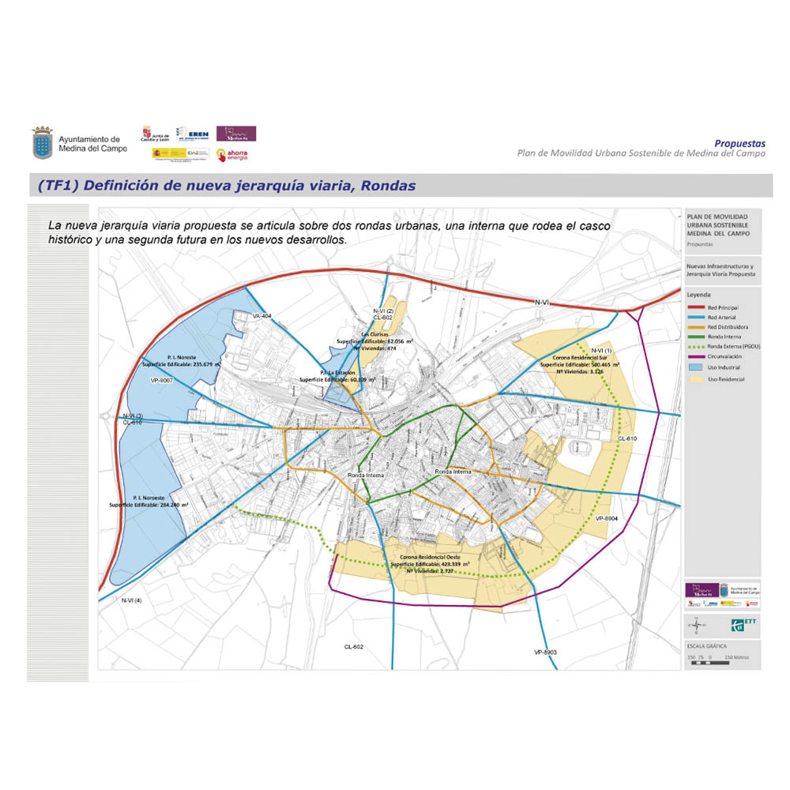
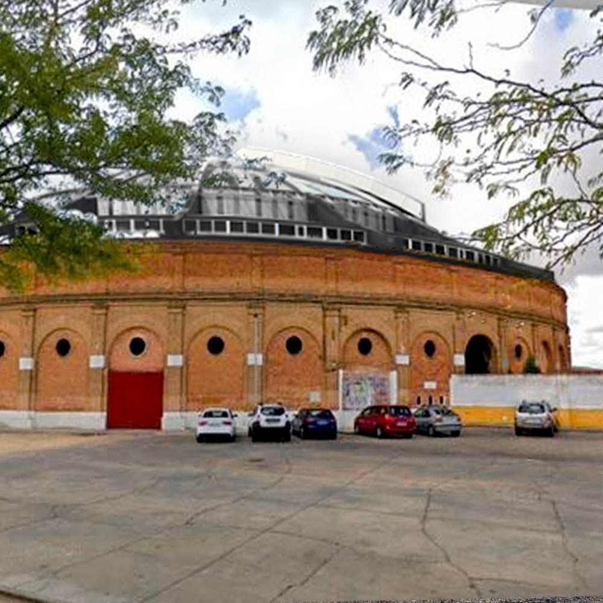
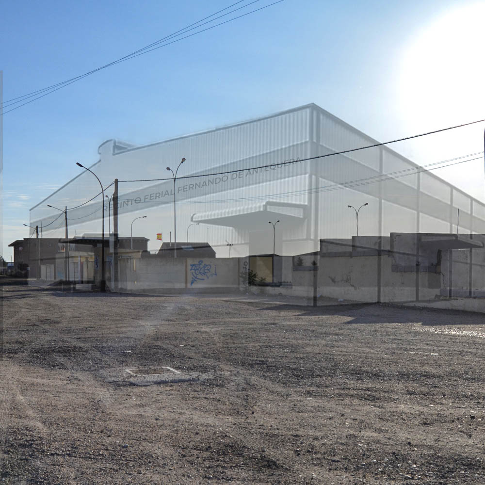
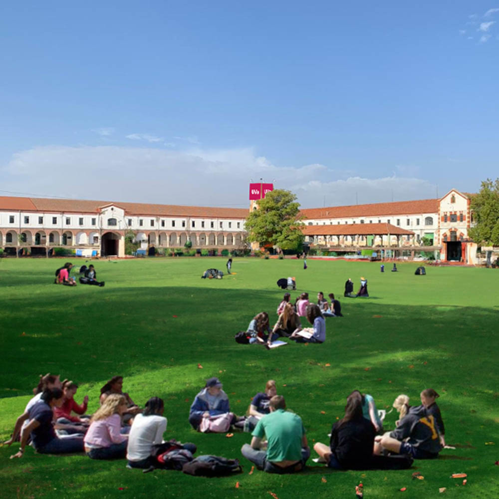
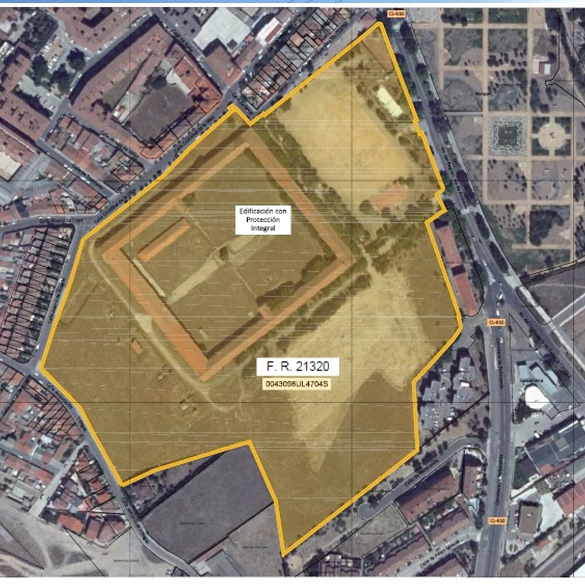
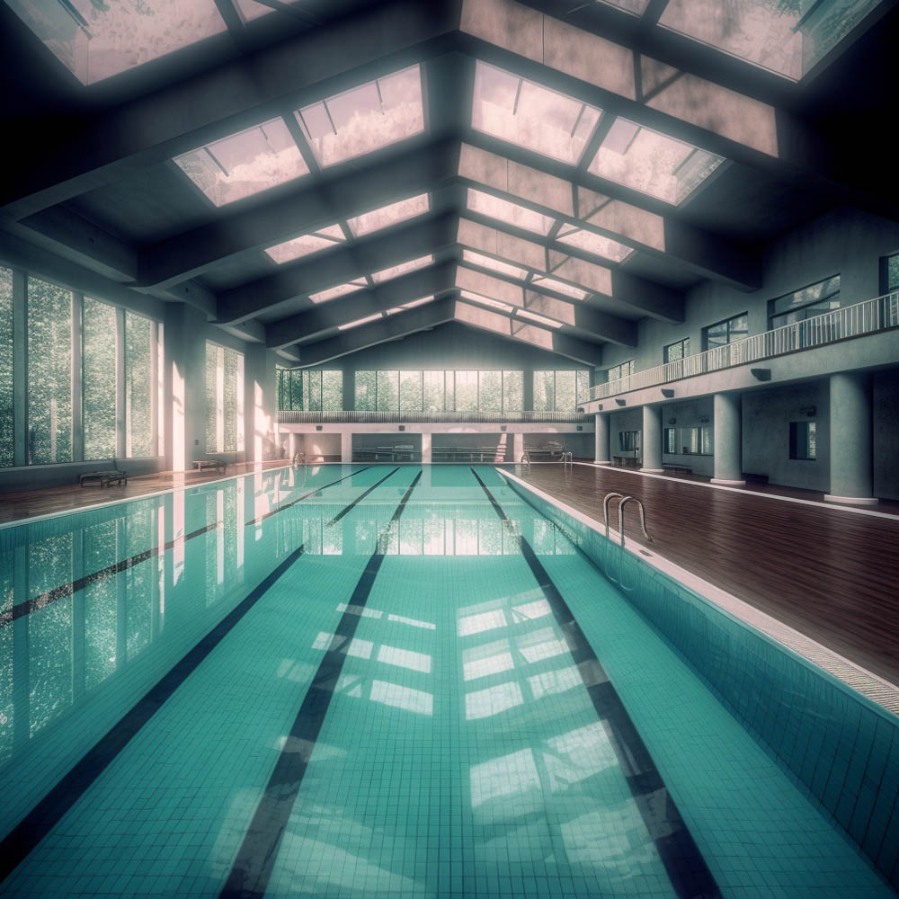
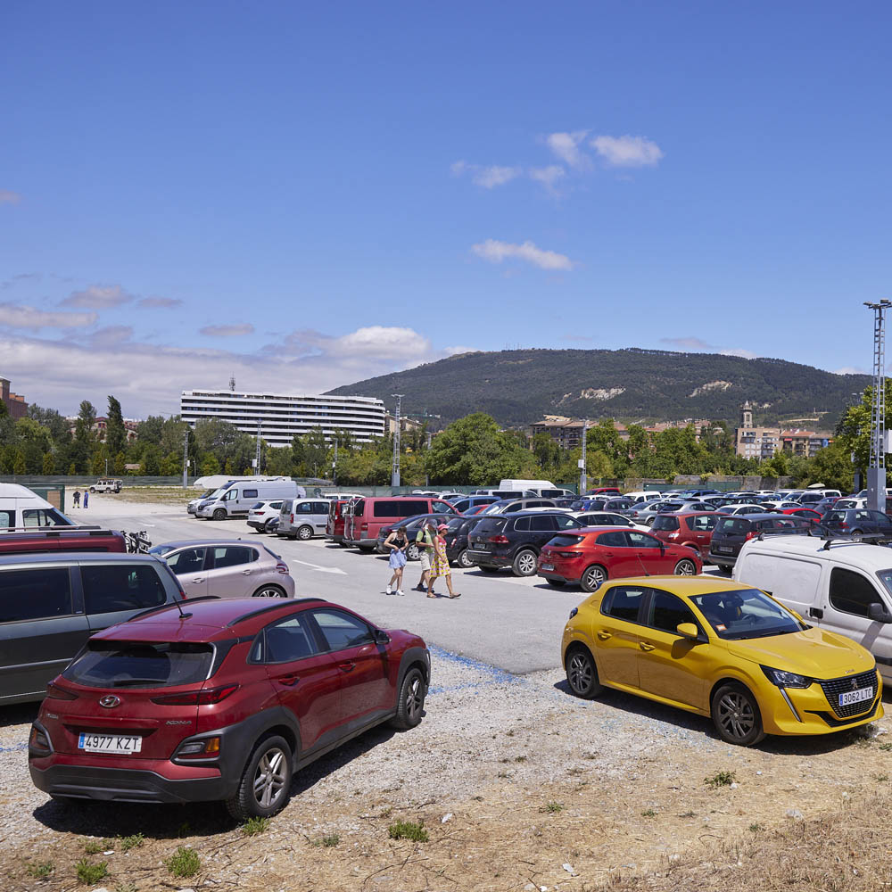

Pinche en las flechas para desplegar más información
Proyecto Circunvalación 2. AUTOVIA A6: Continuar e impulsar el antiguo proyecto de la corporación municipal socialista, de las conversaciones con las diferentes administraciones públicas para ejecutar circunvalación de la zona de las salinas con acceso directo a Hospital y estación de RENFE-AVE

Cubierta en la plaza de toros para eventos culturales y artísticos. Esta infraestructura municipal se utilizará todo el año para diferentes eventos.

Mercado de ganados. Nuevo recinto ferial "Fernando de Antequera". Rehabilitación integral del antiguo mercado de ganados como un recinto ferial similar a IFEMA o Feria de Valladolid. El nombre del recinto procedería a Fernando I de Aragón o Fernando de Antequera, nacido en Medina y rey de Aragón. Persona responsable del esplendor de las ferias medinenses en la Edad Media.

Espacio del antiguo Cuartel Militar Marqués de la Ensenada. La utilización del Cuartel para el desarrollo urbanístico de nuestra villa viene abalado por la Ministra de Defensa, Margarita Robles.


Proyecto Puente Barrientos-Santiago. Separación de la vía peatonal de la de vehículos rodados. Ejemplo similar al Puente de Aguacaballos. Piscina cubierta. Recuperación en su totalidad de la infraestructura de la piscina y optimizar todos sus servicios.

Hospital Simón Ruiz. Iniciar la fase 3ª y 4ª financiada por el Gobierno de España a través del 1,5% cultural y de los Fondos PRTR respectivamente y recuperar la finalidad para la que fue proyectada: un Centro de Desarrollo Económico y Empresarial.
Gestiones con SIEMENS ALEMANIA En la actualidad la Empresa Siemens GAMESA , cuenta en nuestra localidad con un espacio industrial, completamente instalado, moderno y sin actividad. Iniciaremos contactos con dicha empresa para desarrollar la industria local.
Nueva oficina de urbanismo municipal. Poner en marcha un servicio de Urbanismo municipal con una metodología de trabajo más eficaz. Se acabaron las esperas. 2ª y 3ª Fase Área de Transporte Continuar el desarrollo del área de transporte para mejorar los servicios del polígono escaparate.
Creación de aparcamientos disuasorios cercanos al centro urbano.

Mejora parques y zonas verdes Es prioritario la puesta a punto de nuestros espacios naturales. Necesitamos que nuestros niños y mayores tengan lugares de ocio cuidados y acondicionados.
Embellecimiento de Medina del Campo y sus accesos. Realizar un concurso de ideas sobre las actuaciones necesarias para el embellecimiento de nuestros accesos Cada una de ellas tendrá una temática significativa de la ciudad (vino, ferrocarril, encierros, Semana Santa, historia).
Además, potenciaremos el arte urbano en nuestras calles con modelos similares a Valladolid o Madrid.
Gestión eficaz de los servicios públicos de mantenimiento. Asfaltado, limpieza, reparaciones, etc.
Proyecto Travesía Antigua N-6 Realizar una restauración integral en pavimentación, acerado, alumbrado, equipamiento urbano, etc … Suelo en Planes Parciales Realizar inventario de las propiedades municipales de suelo público en parcelas de cesión POR PLANES PARCIALES, con el fin de resolver la utilización de las mismas desde la administración local o convenios privados de su uso, dentro del fin marcado por cada plan parcial. Recuperación de la línea de trabajo en el desarrollo de Proyectos Europeos. Por la importancia de que MEDINA esté a la cabeza del desarrollo y de la imagen en Europa Reactivación y adecuación de Medina 2030 y los foros de participación ciudadana Recuperar la participación de los agentes socioeconómicos en el proceso de desarrollo de Medina (Medina 2030) Plan de Lucha contra la despoblación Reactivación de este plan. Manteniendo los "+ 20.000 habitantes" podremos seguir disfrutando de los servicios públicos básicos. Ampliación y diversificación de grados del Centro de Formación Profesional de Medina Del Campo en el Centro de Desarrollo Empresarial de Simón Ruiz. Ampliación de las ofertas de Formación Profesional (incluyendo Grados Superiores) ubicando estos en el Centro de Desarrollo Empresarial Simón Ruiz atendiendo a las necesidades laborales de la población. Inventario de edificios municipales Realizar inventario de todos los edificios de propiedad municipal en uso o cerrados, para su rehabilitacion con fondos europeos para su posterior utilización.
Servicios Sociales
Queremos una Medina saludable, segura y próspera que sea accesible, inclusiva y
sostenible. Creemos que Medina se tiene que VER, SENTIR y QUERER. Debemos construir una
ciudad para todos y todas, en definitiva, un lugar dónde querer vivir.
Cultura
Hospital Simón Ruiz Puesta en valor de su legado histórico como edificio y potenciación de su archivo, uno de los más importantes en Europa. Uso para exposiciones y convenciones culturales.
Recuperación del Palacio de Quintanilla y museo de las ferias. El museo de las ferias es fundamental para seguir transmitiendo la importancia de nuestra herencia histórica, cultural y patrimonial, por ello creemos necesaria su ampliación a través del Palacio de Quintanilla.
Antiguo Palacio perteneciente al contador de los Reyes Católicos de un gran valor e interés histórico y patrimonial, siendo su localización perfecta para plantear la ampliación del museo local. Espacio que podría ser utilizado para ampliar las relaciones del museo con otros museos nacionales e internacionales con exceso de obras e incapacidad para mostrarlas todas, convirtiéndose en una sala de exposiciones temporales y satelitales o un espacio aledaño para charlas y conferencias.
Monasterios premonstratenses Comprometidos con la promoción y cuidado de nuestro patrimonio. Por ello, creemos necesario la puesta en valor de nuestros monasterios premonstratenses: San Saturnino y Santa María de los Huertos, acercándolos a los ciudadanos y divulgando su historia. Potenciación del patio del Palacio Testamentario. El patio del Palacio Real Testamentario ha sido testigo de multitud de conciertos, charlas e incluso obras de teatro a lo largo de su historia. Creemos que es un espacio en desuso y tenemos la voluntad de recuperar su utilidad para el ocio cultural de la villa en verano mediante proyecciones de cine de verano, conciertos nocturnos, charlas, recitales poéticos, etc.
Importancia de las asociaciones culturales. Fomentar y cuidar. Las asociaciones culturales son necesarias para nuestras ciudad. Nos consta que muchas de estas asociaciones se sienten poco escuchadas y cuidadas, considerándolas uno de los ejes fundamentales para la cultura de la ciudad. Nos comprometemos a escucharlas y ayudarlas en todo lo que nos sea posible, a tenerlas presentes y mantener las ayudas económicas que se les ofrecen.
Proponemos, además, crear un censo accesible de la variedad de asociaciones con las que contamos para fomentar las relaciones entre las mimas, su promoción y facilitar la llegada de nuevos integrantes Semana de Cine (SECIME). Por todos es sabido que nuestra Semana de Cine es un referente a nivel internacional en lo que a cortometrajes y videoclips se refiere. Cuenta con una larga trayectoria y notoriedad que debemos seguir cuidando y cultivando, por ello debemos retomar la presentación en Madrid ante la prensa y la industria especializada.
Nos gustaría además retomar la participación ciudadana en la Semana de Cine, principalmente la joven. La SECIME debe acercarse a los colegios e institutos para incentivar el interés por el cine: creando talleres, concursos y actividades paralelas.
Escuela municipal de teatro y festival de teatro aficionado. Recuperación de la Escuela municipal de teatro. Organización de un festival de teatro aficionado con otras escuelas municipales, potenciando lazos con otros municipios.
Festival de música. El auge de los festivales musicales de verano ha hecho que multitud de localidades se lancen a tener su propio festival siendo una oportunidad de encuentro y desconexión para sus ciudadanos, así como un evento importante para atraer visitantes que reactiven el comercio y la hostelería.
Charlas TEDx Las Charlas TEDx han conseguido una gran popularidad a nivel internacional. Tras habernos puesto en contacto con la organización, sabemos que estarían interesados en acercarse a nuestra villa. Consideramos que sería una forma excepcional de darnos a conocer internacionalmente y de valorar el talento de la comarca.
Puesta en valor de personajes históricos. Si bien Isabel la Católica, Carlos V y nuestros queridos comuneros son personajes fundamentales en la historia de Medina y de España creemos que es necesaria la puesta en valor de otros personajes que también tuvieron fuertes lazos con la historia de la villa que han sido olvidados o relegados a un segundo plano a través del tiempo, tales como Fernando de Antequera, Juan II de Aragón o Garci Rodríguez de Montalvo, a través del nombramiento de calles, charlas y dinámicas en colegios, el Centro Cultural Integrado o el Museo de las Ferias.
Residencias de investigación y creación artística. Cada vez hay más municipios que ofrecen residencias artísticas y creemos que la trayectoria cultural de Medina del Campo no merece menos. Contamos con una gran número de artistas que han tenido que salir fuera de Medina en busca de formación y oportunidades, y los que se han permanecido, se sienten en muchos casos poco valorados. Nos gustaría que sintiesen Medina como un lugar al que volver y dónde poder seguir desarrollándose, además de dar a conocer la villa a otros artistas y fomentar el contacto e intercambio multidisciplinar, llamando así al turismo cultural y procurando un ocio alternativo y de calidad a los ciudadanos. Ampliación de talleres artísticos. Nos gustaría ampliar la oferta de talleres artísticos para que la escuela municipal no se límite a la danza y a las artes escénicas, con clases y talleres multidisciplinares de pintura, fotografía, escritura creativa, club de lectura, recepción artística, etc. utilizando distintos espacios a disposición para ello como la Biblioteca Municipal o el Centro Cultural Isabel la Católica. Con la voluntad de abarcar al máximo las inquietudes de todos los medinenses para evitar los desplazamientos fuera de Medina, de modo que se incentive la movilización artística ciudadana y los espacios de desarrollo personal. Creación de un Concurso literario anual. Nos consta de la gran cantidad y calidad de escritores/as con los que cuenta Medina del Campo, por ello creemos propicia la creación de un concurso literario que impulse la producción local y ponga en contacto con otros/as creadores/as de diferente puntos de la Península, a través de la creación de lazos con espacios de creación.
Festejos, ferias y turismo.
Recuperación de la tradición ferial de nuestra villa. Haciendo honor a nuestra tradición, nos comprometemos a la recuperación de la feria de ganado a través de una nueva visión adaptada a los tiempos actuales. Por ejemplo: muestras monográficas, yeguadas, competiciones caninas, un mercado de maquinaria de segunda mano, etc. con el objetivo de reavivar los domingos de la villa de las ferias.
Creación de un certamen taurino. Consideramos primordial mantener la tradición taurina de la villa y mantenernos como referente en la provincia. Proponemos potenciar los encierros tradicionales de la villa respetando las fechas festivas además de la creación de una novillada para toreros jóvenes. Creemos necesaria la participación y colaboración de las peñas taurinas, ofreciendo entradas o abonos a un precio especial.
Concurso de charangas. Una de las marcas festivas de Medina del Campo es su gusto por las charangas. Instauraremos un concurso de Charangas para avivar la afluencia turística de ocio, apoyando a nuestras charangas medinenses.
Visitas guiadas y teatralizadas. El mayor atractivo de Medina del Campo para los turistas es nuestra herencia cultural e histórica por eso creemos imprescindible la ampliación, en épocas de mayor afluencia, de las visitas guiadas y teatralizadas, que hagan amena y accesible esta herencia a los visitantes. Ampliaremos las oferta a todos los recursos turísticos de interés, propiciando la reactivación economica de la hostelería y del comercio medinense. Parque temático. Creación de un parque temático de atracción turistica similar al de otros municipios vallisoletanos (similar al Parque Mudéjar de Olmedo o al Castillo encantado de Trigueros del Valle), destinado al público familiar para incentivar el turismo y comercio, además de ampliar las alternativas de ocio de los propios ciudadanos de Medina.
Creación de una guía ocio para eventos y reorganización de las redes sociales. Para mejorar la afluencia y dar a conocer las actividades, proponemos la creación de una guía de ocio en las que se recojan todos los eventos del municipio. Además de un plan de reorganización de las RRSS según la categoría del evento y el público objetivo, centralizando la información y haciéndola más accesible para todo/as.
Juventud
Creación de un Espacio joven. La juventud necesita un Espacio Joven de ocio, un centro cultural y de ocio dónde desarrollar sus propuestas creativas, un lugar de encuentro e inspiración dónde satisfacer sus necesidades e inquietudes.
A través de la cesión de espacios con salas multiusos para talleres, ensayos (grupos música, baile, etc.), exposiciones, grabaciones, cursos de formación, etc.
Desde el que se crearan nuevos puestos de empleo para profesionales que, como responsables, asesoren a otros jóvenes en materia de empleo, constitución de asociaciones, uso adecuado de las TIC, etc.
Nos comprometemos, además, a que las instalaciones sean accesibles y estén adaptadas para incluir a las personas con necesidades especiales.
Ocioteca. Mejorar las actividades que ofrece la Ocioteca adaptando su oferta al rango de edad de los usuarios. Talleres de prevención. Los medios de comunicación se han hecho eco del aumento de violencia y trastornos de salud mental entre los jóvenes en los últimos años. Creemos que es absolutamente necesario promover y facilitar actividades de prevención de bullying, violencias, trastornos de la conducta alimentaria, suicidios, etc. Así como los talleres para padres. En definitiva, promover la salud mental de forma general entre nuestros jóvenes y niños/as tanto en los centros educativos como en los espacios de ocio Actividades integradas a personas en situación de discapacidad.
Deportes
Adecuación/mantenimiento instalaciones. La piscina no es la única instalación deportiva que necesita de reparación y mantenimiento. Por ello, proponemos un plan de rehabilitación de todos los espacios deportivos y posteriormente, un plan de mantenimiento de los mismos. A mayores buscaremos una metodología para solventar el sobreuso de los pabellones, a través de otros espacios deportivos (como el frontón municipal cubierto). Recuperación escuelas deportivas. Ha habido un detrimento de las escuelas deportivas, entre ellas el club de raqueta y otros, por lo que nos comprometemos a su recuperación. Formaciones para entrenadores deportivos. Queremos acercar las formaciones a los clubes deportivos. De esta manera, potenciando la educación en el deporte base. Un formador deportivo pasa más de seis horas a la semana con tu hijo. Turismo deportivo. Open Crossfit y Cross entre uvas Otro de nuestros objetivos, es la atracción de turismo deportivo con la programación de eventos deportivos de carácter nacional/internacional dando a conocer Medina del Campo.
Nuestras propuestas son: un Open Internacional de Crossfit (deporte en auge) y un Cross entre los viñedos de la tierra.
Fomentar el deporte en personas con necesidades especiales. Creemos que el deporte para los ciudadanos y ciudadanas en situación de discapacidad es una deuda pendiente. Por lo que consideramos importante para nuestro proyecto, la celebración de un evento deportivo que dé a conocer a los deportistas medinenses que compiten profesionalmente y anime a otros ciudadanos en situación de discapacidad a informarse sobre las alternativas cercanas a Medina para la realización de este tipo de actividades. Cesión del espacio del bar del polideportivo Barrientos. Actualmente se encuentra en desuso, por lo que para los clubes asiduos al polideportivo es una oportunidad que les ayudará a subvencionar sus gastos internos y ofrecerá un servicio a los asistentes de los eventos deportivos. Campo Airsoft. Crearemos un campo de airsoft al aire libre para ampliar la oferta deportiva y ocio saludable.
Galería de tiro al plato e IPSC en Gomeznarro No nos olvidamos de nuestra pedanías, habilitando una galería de tiro al plato e IPSC en Gomeznarro.
Barrios
Desde esta nueva agrupación socialista consideramos que la única manera de hacer una política efectiva por y para los Medinenses es estar a pie de calle, para ello nos hemos reunido con las distintas asociaciones vecinales para conocer de primera mano cuales son sus necesidades.
Nuestro programa no pretende ser algo estático e inamovible, se trata de ir construyendo junto a nuestros vecino/as, soluciones a los problemas que se vayan presentando, no solo durante la campaña electoral si no siempre que sea necesario. Estamos a vuestra disposición, sabéis dónde encontrarnos.. La concejalía de barrios sería una realidad.